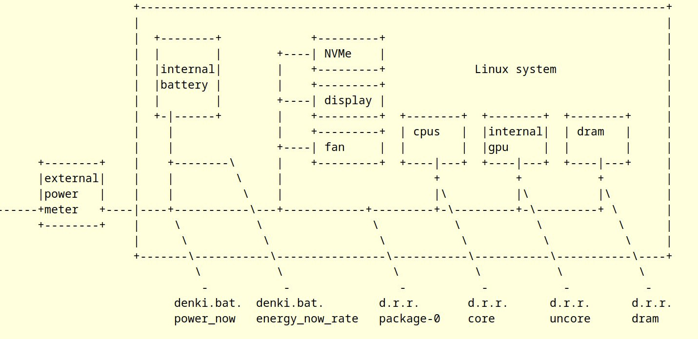
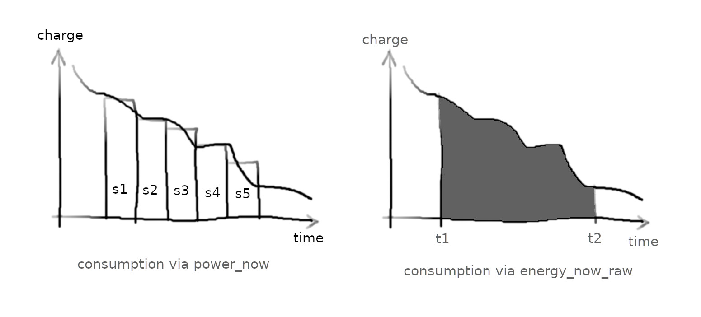
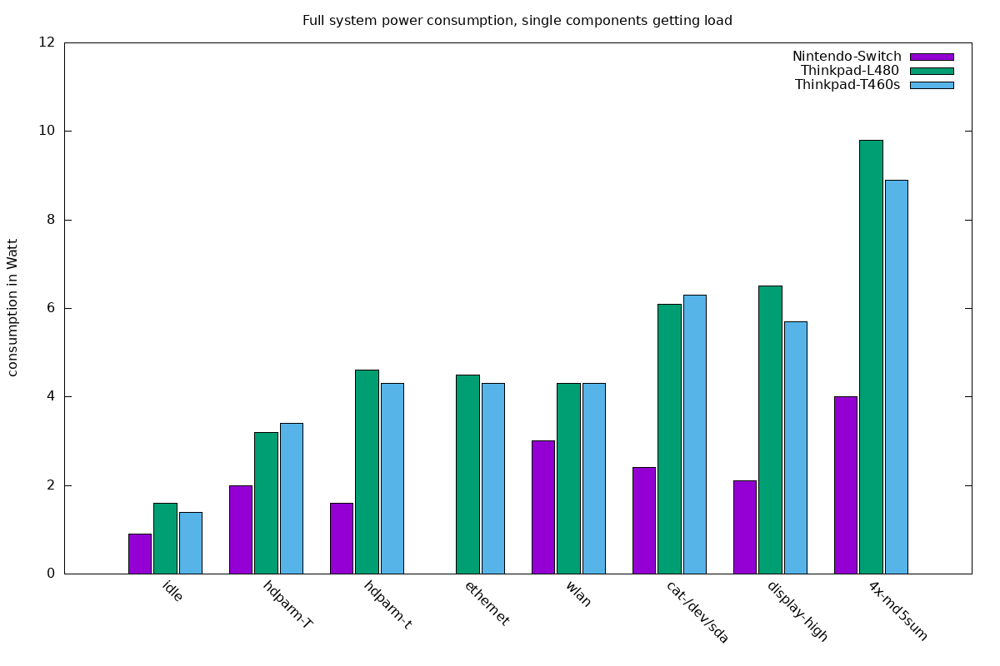
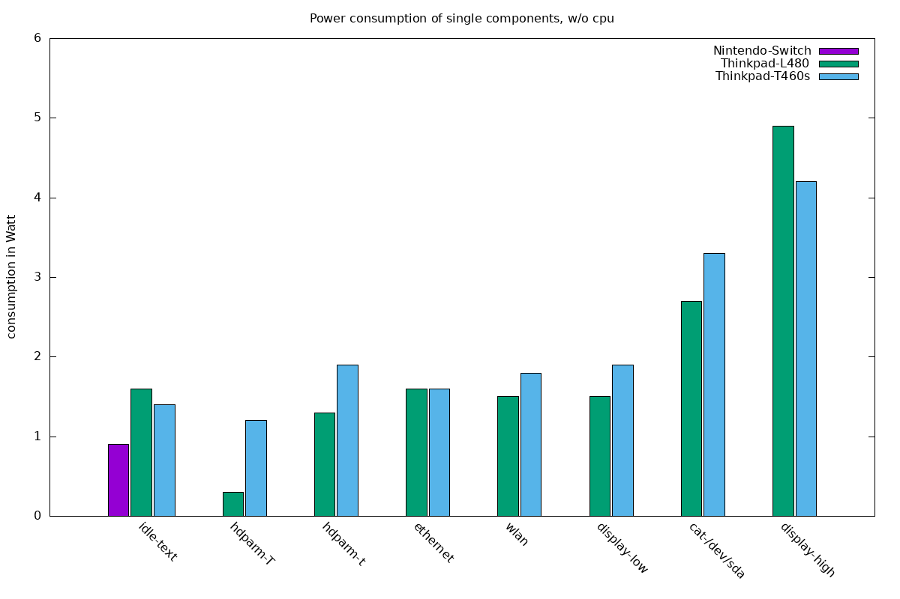
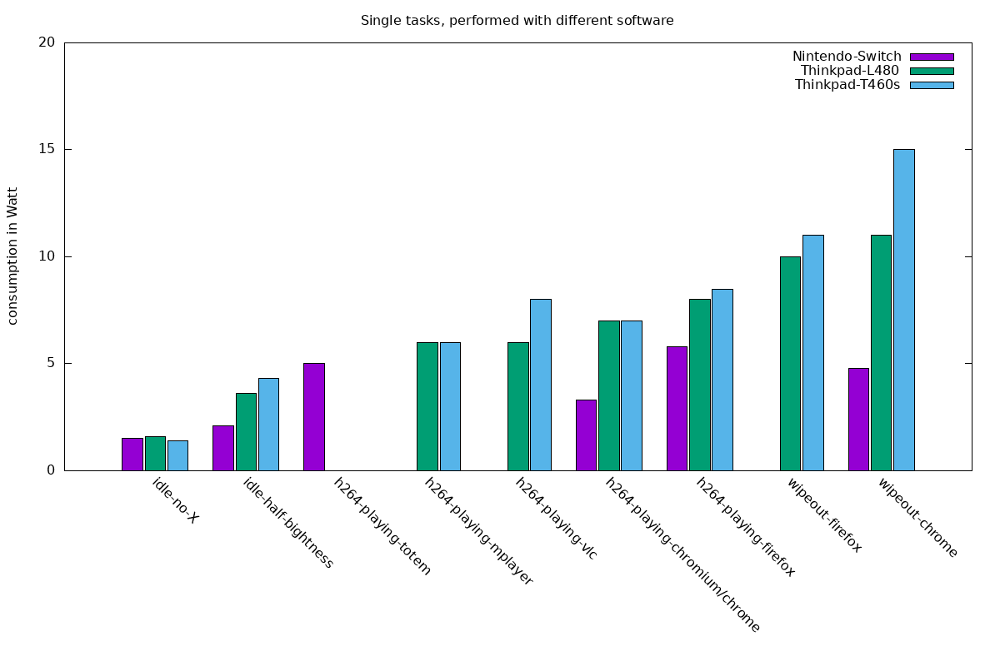
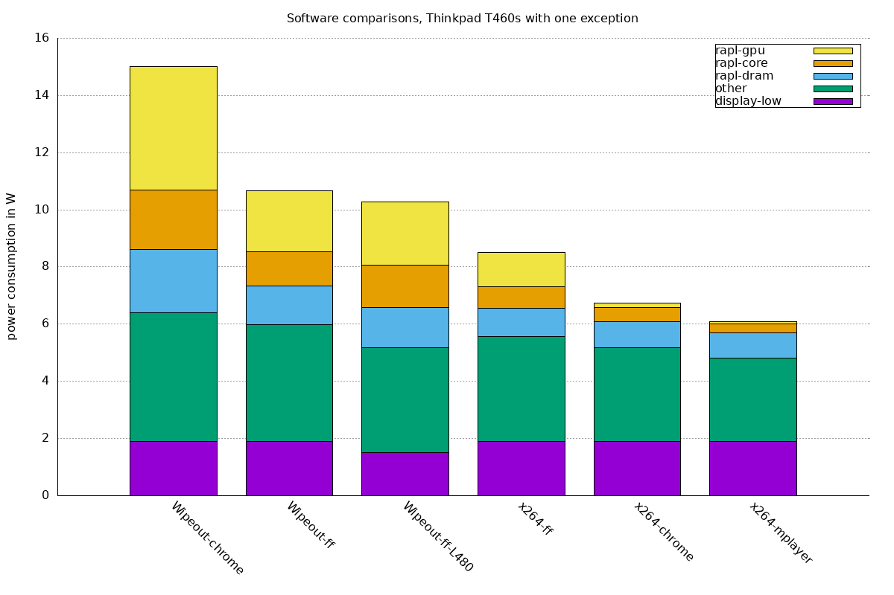
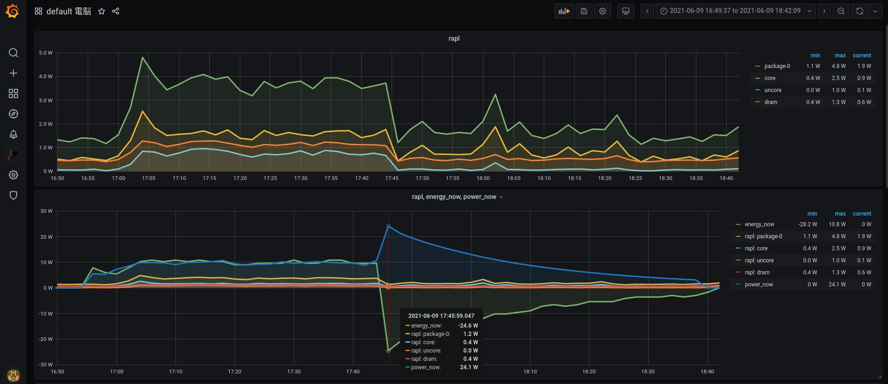

1. Introduction
We all use "powertop" on Linux to see the current power consumption. Since some time, I was wondering about further ways of measuring and recording the power consumption of my Thinkpad, and graphing it. How much power is used when idling, when I’m not logged in and running powertop? How accurate can one measure the consumption of single components like NVMe disk from the Linux side?
If solid long term measurements were possible, we could answer things like:
-
Which software uses least power to show a video file: firefox, chrome, mplayer or vlc?
-
When we release new versions of a software, we often compare performance with the older version, for example the time required to compute certain things. But comparing power consumption of new vs. old version could have an impact on how long the Thinkpad runs on battery, and understanding which version is more power efficient can have a world wide impact!
-
More illustratively, can I compute how much dead dinosaur (oil) converted to electric energy are used for common tasks?
So, what’s this "denki" term? Denki is the roman character representation of the Japanese term 電気, spelled "denki", meaning "electricity". Living in Japan, I just always had this in mind for the component collecting electric power metrics.
1.1. History
To store recorded values over time, pmda-denki uses the Performance Co-Pilot software. 2019 I wondered about writing pmda-denki slides, pages 25-27, by then considering to use temperature sensors and system load to estimate the consumption. The idea: look at how much the air heats up, and guess based on that how much energy is used to heat it up. That’s possible, but not as accurate as what I ended up with.
1.2. Related software
-
Kepler: power stats collection, having containers in mind and uses AI to understand how much is consumed by single containers/pods. Can shift workloads based on criteria ("this area has currently sun and solar energy, let’s move loads here")
-
Intel telegraf: influxdb plugin, makes power stats available to influxdb and for example Grafana.
1.3. Hardware requirements
pmda-denki allows to read various metrics related to power, using these sources:

-
The cable on the left connects the power supply (not shown), and the external power meter, for example a smart plug
-
Inside the Linux system, we have the first sensor, the metric gets available as denki.bat.power_now. When external power is disconnected, this metric shows the current consumption of the whole system.
-
To the right, we have denki.bat.energy_now_rate. This is computed inside the the pmda-denki software, and tells with which rate the internal battery is charging or discharging.
-
Further to the right, we have the denki.rapl.rate.package-0 metric, abbreviated. RAPL is available on recent Intel chips, and shows how much cpus/gpu/dram together consume at the moment.
-
The other 3 metrics show the single consumption for cpus, the gpu and the memory.
The 2 metrics on the left are only available on laptops with battery, and only delivering usable metrics when charging or discharging the system. The four metrics on the right are always available on Intel systems.
In the middle, we have further components where we can not directly measure their single consumption: NVMe, internal display if active, fan etc. When the system runs on battery, we have the overall consumption from the metrics on the right, see the readings on the left, and then see how much all in all the other components consume.
2. Installation & Config
As the first step, we will install PCP. Package "pcp-zeroconf" will do that, and also configure and start services like pmcd (which is making metrics available) and pmlogger (which archives metrics into archive files, for later examination).
dnf -y install pcp-zeroconf pcp-pmda-denki cd /var/lib/pcp/pmdas/denki ./Install
With that done, metrics regarding electrical power are available. On laptops where pmda-denki can access both sources:

As per 'pmrep .. -t 20', in 20second timesteps a new line is printed. From the left, we get
-
package: sum of all RAPL values, in Watt. RAPL is available on recent Intel and AMD cpus.
-
core: consumed cpu power via RAPL
-
uncore: GPU consumption, if onboard-GPU
-
dram: memory
All of these are actually counters from the sys-filesystem, and PCP computes the actual rate. The next 3 values:
-
energy_now_raw: the current battery charge, in Watthours. Read from sys-filesystem.
-
energy_now_rate: rate of charging/discharging, computed by pmda-denki in 60second steps
-
power_now: rate of discharging, computed by firmware, updated frequently
Why so many battery values? Let’s consider these graphs: 
Both graphs show the battery charge level over time, while the system consumes energy. Our application is running, and we want to know the amount of energy consumed while the application was running.
power_now reports current consumption, that metric is updated by the firmware roughly once per second. If we want to know the average consumption over a certain timespan, or if we want to compute the "amount of consumed energy", then we need to query this metric at least once per second, store all of the single values (shown as stripes s1-s5), and then calculate based on that.
On the right, we use energy_now_raw: this metric has the current battery charge level. The overall consumption between points in time t1 and t2 is the area below the curve. We can simply measure the charge level at times t1 and t2, and then calculate how much energy was consumed in between.
energy_now_rate is calculated by pmda-denki, using energy_now_raw it calculates the rate of charging/discharge in 60sec steps.
So: power_now shows current consumption, frequently updated. For more accurate measurement, energy_now_raw should be used.
3. Select Use Cases
3.1. Energy consumption of single hardware components
With the tools mentioned I tried to understand how much single components consume. For cpu we see it directly from RAPL, but not for example for wlan. First step: get a systems consumption down as low as possible, here a Thinkpad T460s. Log in from via ethernet, turn off screen, run
powertop --auto-tune tlp start
Then I stop unneeded processes. Measure that, then put single components under stress, and measure again. Results: 
On the left, we see consumption of the idle system. Used hardware: Nintendo Switch (aarch64), Thinkpad L480 and Thinpad T460s. Then consumption while stressing SSD/NVMe, ethernet, wlan, SSD/NVMe + bus/cpu, activated display, and running cpu loads. So far only battery based metrics were used. As we know the idle consumption, we can estimate consumption of the single components:

For this, also the RAPL metrics were used - they are not available on ARM. The T460s has an SSD and the L480 an NVMe, thus these differences. The 'hdparm -T' tests stay inside the SSD/NVME, the NVMe does not only need less power but also shows 19GB/sec transfers instead if 8GB/sec for the SSD. For ethernet, wlan and the other tests the results are comparable.
3.2. Given task, various softwares
Taking one certain task, let’s compare how much power various programs need to perform that task. If you sit in a plane with a laptop on battery and want to watch videos, you want to use the software with the lowest consumption.

On the left, we have the unloaded system again, then the screen with brightness at 50%. Then for task "play this h264 encoded file" consumption with various software. Specialized software like mplayer/vlc does better than browsers. ARM does energy wise better than x86, that was also expected.
On the right, playing this web demo on a browser is the task, and it’s impressive how good ARM does here. We should be fair here though: I did not look at frames-per-second or other quality signs, so it’s possible that chrome renders much more smooth than firefox.
3.3. Where is software burning power?
If we can trust the RAPL values, we can also estimate where software is burning power.

This is all from the Thinkpad T460s, as single exception the values from the Wipeout-firefox-L480 test. We see that over all of the webgl and h264 tests, display and "other" consumption was quite constant. The "other" is basically "everything I can not account more precisely", after looking at overall consumption (from battery metrics) and subtracting the RAPL values. Wipeout-firefox on both Thinkpads shows almost identical consumption patterns. Differences in cpu and GPU consumption between the programs are big.
Results: Thinkpad T460s got a consumer attached with 6.1W consumption as per external meter, while power_now reported 7.8W (already subtracted the idle power, consumed by the system). With a 2.4W external consumer, the sytem reported 2.8W.
For the L480: 15.2W (bat reported) vs. 12.8W (measured), and 5.1W (reported) vs. 4.4W (measured). So if we assume the external meter as correct, we see that the internal values were 14-22% off - but always in the same direction.. so maybe we have 14-22% loss when providing power to usb.
3.4. I need notification about power consumption changes
To realize this, the systems should run pmcd, and have pmda-denki installed. Each of the single systems could then run PMIE, which can react to changes in metrics: for example "write me a mail when the consumption measured via RAPL is suddenly increasing". One can also setup a central collector system, where PCP/pmlogger is collecting the metrics of the other systems, visualizing them all together. Also Grafana supports actions based on configurable metrics changes.
3.5. Visualization of (un)charge
With pmda-denki, we get metrics into PCP archive logs, and can also directly to visualizations.

4. Future
Possible features
-
pcp-htop as of PCP-6.2 can report many things in top-style, it could also report the top-power-consuming processes.
-
Right now, we have overall system consumption of up to 3 sources. Combined with how much load single processes are causing, one can create derived metrics so express which process consumes how much power.
-
Together with details of "how the co2 imprint of the used power source is", one could express consumption in "co2". Could work via derived metrics. If the power is from coal or fuel, the consumed power could also be expressed in gramm-of-coal or liter-of-fuel.
-
Implementation of further sensors: counters from other architectures like ARM, NVidia etc.
-
Interface to read metrics from Kepler
-
Apple has apparently directly ~20 power sensors directly on the AppleSilicon hardware. As of 2023-09-11, these are not available, but will probably in the near future appear on Linux as sensor values. These will likely appear in pmda-lmsensors without further efforts required. Apple silicon power sensors